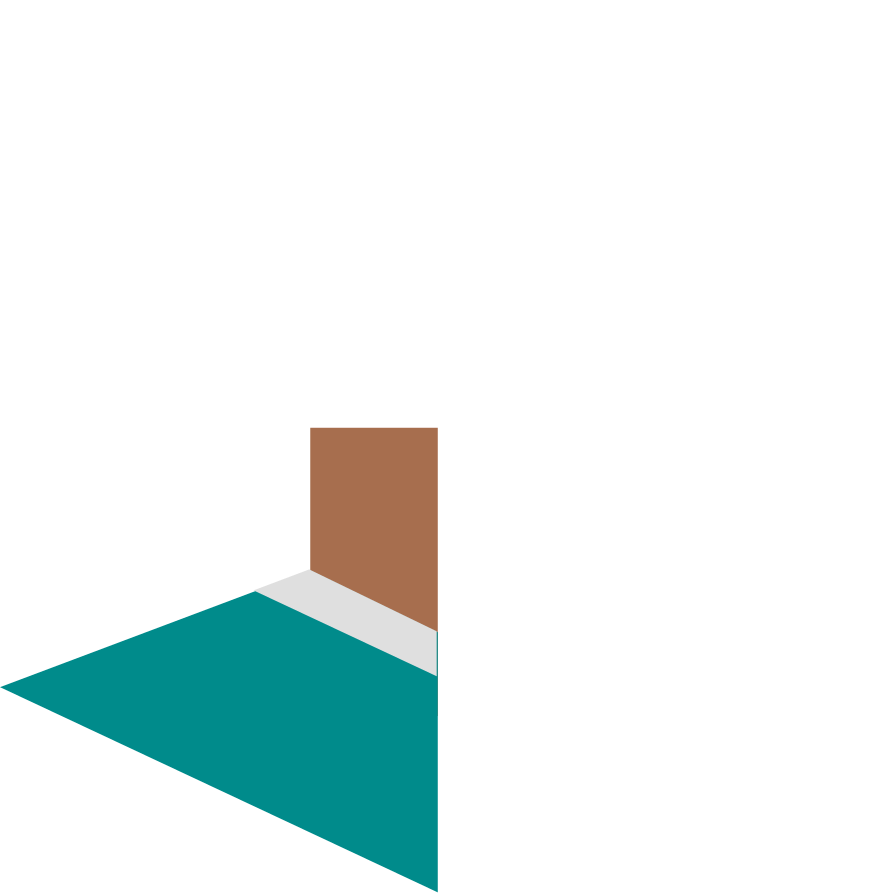
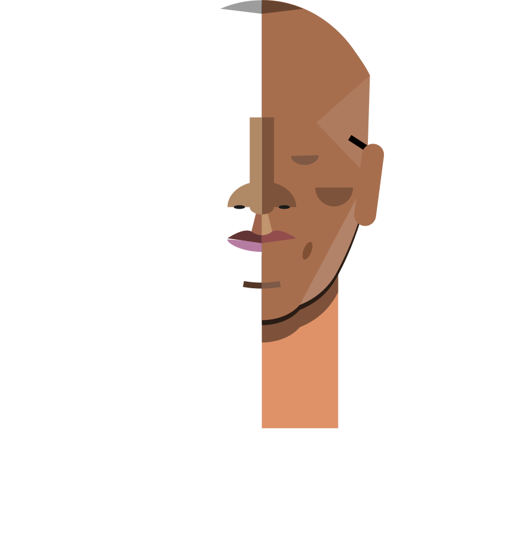
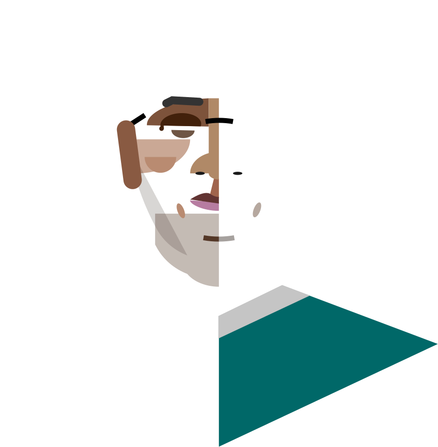
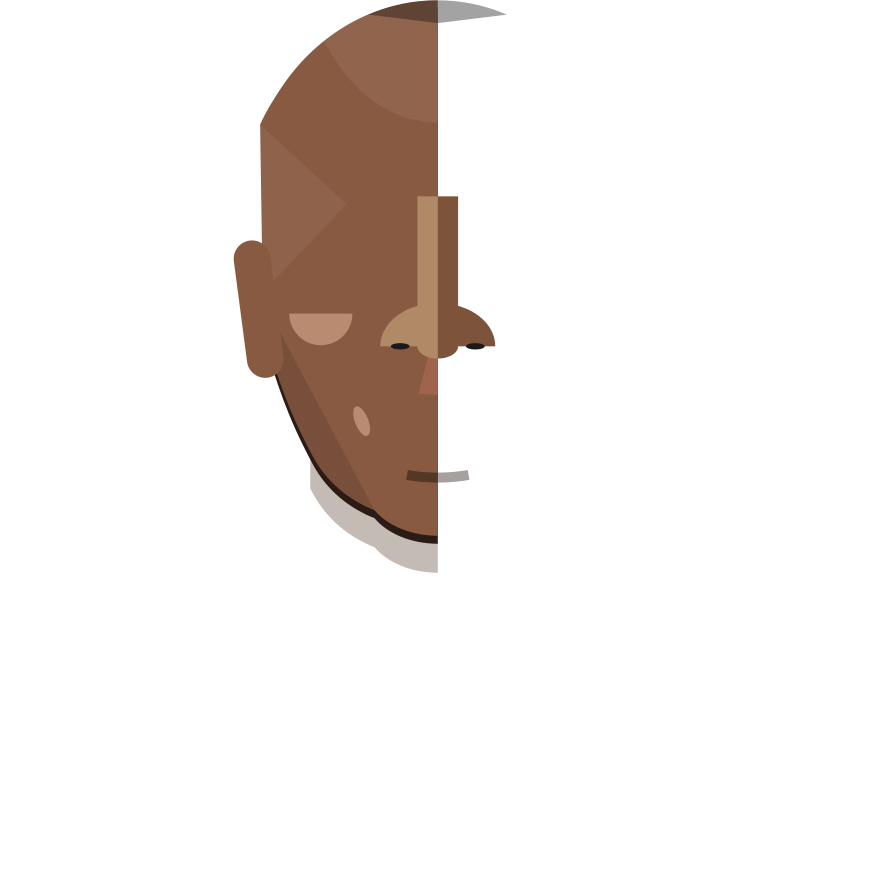
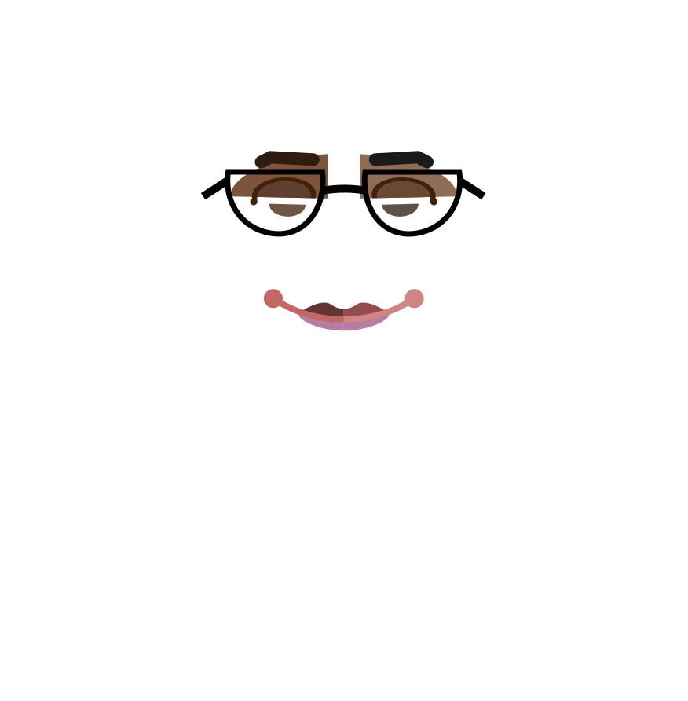
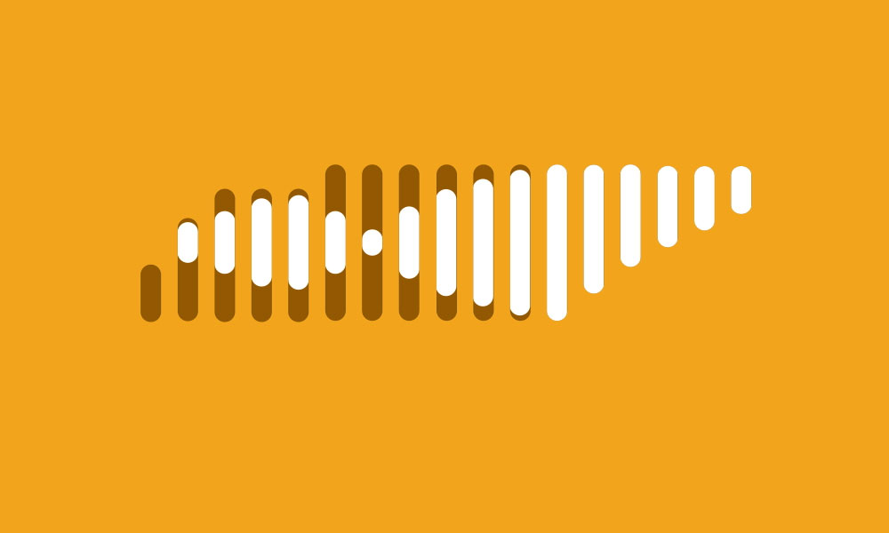
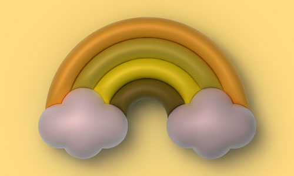
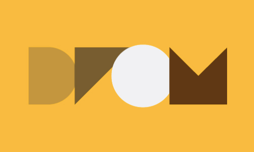
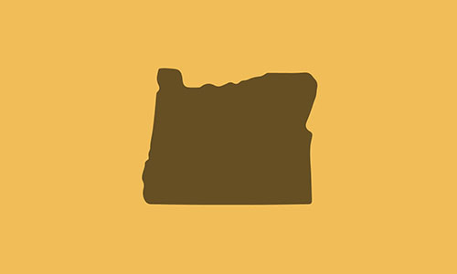
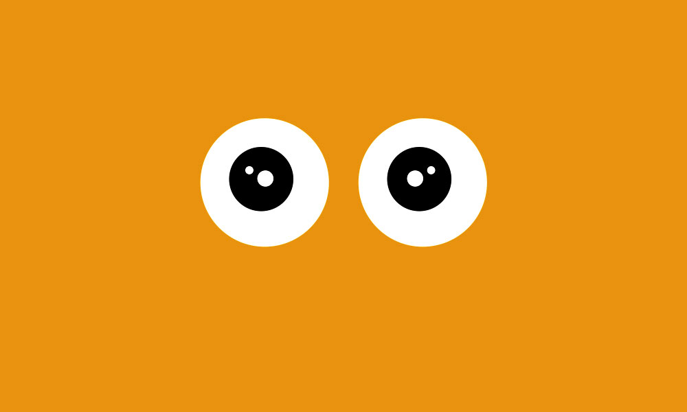

TNECD.com Website Redesign
Tennessee Economic and Community Development website redesign with a modernized visual system and clearer, more intuitive content architecture.
Visit TNECD.com
- Tools: Figma, Photoshop, Illustrator

Pride365 App Marketing
Unified navigation and CTA strategy across WorldPrideDC’s web ecosystem, resulting in a 30× increase in Pride365 app adoption.
- Tools and Skills: Figma, Web Design, UX/UI Design, Research, Visual Design
Swiss Post AI Tool
Designing an AI‑powered interface that turns complex logistics data into clear, actionable workflows.
- Tools: Figma, Photoshop, Illustrator

DRØM Marketing and Print
Designed and produced a suite of print and digital brand assets for DRØM, preparing CMYK‑ready files and consistent visuals for campaigns and packaging.
- Tools: Illustrator, Photoshop, Product Photography

45th Parallel Wines
Created a bespoke, place‑rooted brand and illustration system that transformed a simple template into a distinctive digital storefront for a St. Johns wine shop.
- Tools: HTML, CSS, Photoshop, Illustrator, Squarespace

Digital Ads and GIFs
Designed static and animated assets for multi‑channel campaigns, adapting visuals across social, email, and web while maintaining a cohesive brand voice.
- Tools: Photoshop, Illustrator, After Effects